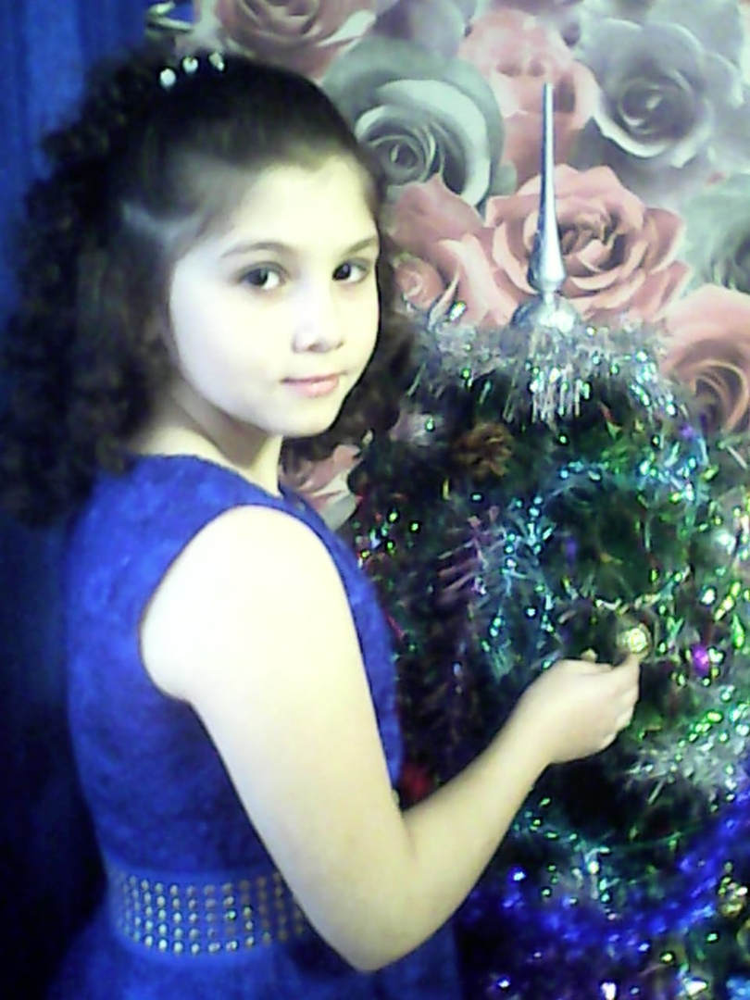

О СЕСТРЕ
Мою сестру зовут - Яна. Ей 13 лет. Родилась в г.Ельня. Учится в школе, в 6 классе. Любит заниматься спортом, рисовать, танцевать и петь. Она всегда очень позитивная и смешная. С ней мне никогда не скучно.
Также она любит ходить гулять со своими друзьями и весело проводить время с ними.
